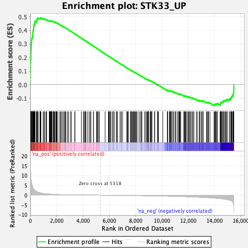
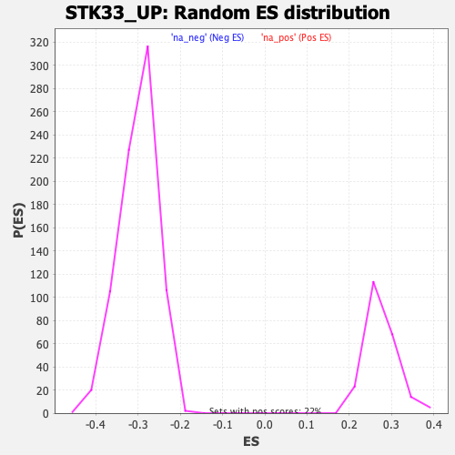

| | | Dataset | DE_genes |
| Phenotype | NoPhenotypeAvailable |
| Upregulated in class | na_pos |
| GeneSet | STK33_UP |
| Enrichment Score (ES) | 0.49198866 |
| Normalized Enrichment Score (NES) | 1.7840751 |
| Nominal p-value | 0.0 |
| FDR q-value | 0.0027323475 |
| FWER p-Value | 0.021 |
Table: GSEA Results Summary

Fig 1: Enrichment plot: STK33_UP
Profile of the Running ES Score & Positions of GeneSet Members on the Rank Ordered List
| PROBE | GENE SYMBOL | GENE_TITLE | RANK IN GENE LIST | RANK METRIC SCORE | RUNNING ES | CORE ENRICHMENT | | 1 | ST20 | | | 1 | 19.370 | 0.0528 | Yes |
| 2 | CCL4 | | | 9 | 14.658 | 0.0924 | Yes |
| 3 | OLR1 | | | 15 | 12.741 | 0.1268 | Yes |
| 4 | BCL2A1 | | | 18 | 12.506 | 0.1608 | Yes |
| 5 | AQP9 | | | 38 | 9.555 | 0.1857 | Yes |
| 6 | LY96 | | | 47 | 8.885 | 0.2094 | Yes |
| 7 | SAMD9L | | | 50 | 8.539 | 0.2326 | Yes |
| 8 | TFEC | | | 56 | 8.248 | 0.2548 | Yes |
| 9 | KCNJ2 | | | 72 | 7.401 | 0.2740 | Yes |
| 10 | TREM1 | | | 78 | 7.063 | 0.2929 | Yes |
| 11 | TYROBP | | | 94 | 6.282 | 0.3091 | Yes |
| 12 | TNF | | | 104 | 6.046 | 0.3250 | Yes |
| 13 | TMEM71 | | | 108 | 5.928 | 0.3410 | Yes |
| 14 | RNF19B | | | 159 | 4.659 | 0.3504 | Yes |
| 15 | GBP3 | | | 169 | 4.485 | 0.3621 | Yes |
| 16 | FGL2 | | | 188 | 4.141 | 0.3722 | Yes |
| 17 | P2RY14 | | | 196 | 3.898 | 0.3824 | Yes |
| 18 | C15orf48 | | | 212 | 3.652 | 0.3914 | Yes |
| 19 | BCL3 | | | 226 | 3.524 | 0.4001 | Yes |
| 20 | GPR65 | | | 250 | 3.289 | 0.4076 | Yes |
| 21 | IL1A | | | 261 | 3.130 | 0.4155 | Yes |
| 22 | ARL5B | | | 263 | 3.112 | 0.4239 | Yes |
| 23 | IRF9 | | | 269 | 3.053 | 0.4319 | Yes |
| 24 | TLR1 | | | 283 | 2.887 | 0.4390 | Yes |
| 25 | C5AR1 | | | 321 | 2.626 | 0.4437 | Yes |
| 26 | IL1B | | | 343 | 2.495 | 0.4491 | Yes |
| 27 | PELI1 | | | 348 | 2.456 | 0.4556 | Yes |
| 28 | LPAR6 | | | 359 | 2.397 | 0.4615 | Yes |
| 29 | GPATCH2 | | | 371 | 2.342 | 0.4671 | Yes |
| 30 | ADAMDEC1 | | | 481 | 1.829 | 0.4649 | Yes |
| 31 | NAMPT | | | 486 | 1.817 | 0.4696 | Yes |
| 32 | RNF149 | | | 491 | 1.794 | 0.4743 | Yes |
| 33 | CCDC71L | | | 502 | 1.766 | 0.4784 | Yes |
| 34 | MYOZ2 | | | 517 | 1.689 | 0.4821 | Yes |
| 35 | MILR1 | | | 530 | 1.654 | 0.4859 | Yes |
| 36 | NCF2 | | | 548 | 1.590 | 0.4891 | Yes |
| 37 | BCL6 | | | 612 | 1.442 | 0.4889 | Yes |
| 38 | LRRC25 | | | 743 | 1.211 | 0.4836 | Yes |
| 39 | KMO | | | 751 | 1.192 | 0.4864 | Yes |
| 40 | GDF15 | | | 783 | 1.135 | 0.4875 | Yes |
| 41 | CLEC2B | | | 789 | 1.127 | 0.4902 | Yes |
| 42 | MPEG1 | | | 809 | 1.096 | 0.4920 | Yes |
| 43 | SLC12A6 | | | 987 | 0.871 | 0.4827 | No |
| 44 | CLDN1 | | | 989 | 0.868 | 0.4850 | No |
| 45 | ZFP36L1 | | | 1074 | 0.777 | 0.4816 | No |
| 46 | NECAP1 | | | 1090 | 0.763 | 0.4827 | No |
| 47 | STX12 | | | 1199 | 0.679 | 0.4775 | No |
| 48 | UBE2W | | | 1235 | 0.654 | 0.4770 | No |
| 49 | WNT5A | | | 1236 | 0.653 | 0.4788 | No |
| 50 | AMN1 | | | 1445 | 0.545 | 0.4666 | No |
| 51 | IL6ST | | | 1449 | 0.543 | 0.4679 | No |
| 52 | TMEM255A | | | 1490 | 0.522 | 0.4666 | No |
| 53 | SNX16 | | | 1495 | 0.519 | 0.4678 | No |
| 54 | SMIM14 | | | 1511 | 0.512 | 0.4682 | No |
| 55 | NRP1 | | | 1536 | 0.501 | 0.4680 | No |
| 56 | ABCA1 | | | 1569 | 0.485 | 0.4672 | No |
| 57 | STAM2 | | | 1582 | 0.478 | 0.4677 | No |
| 58 | HINT3 | | | 1606 | 0.470 | 0.4675 | No |
| 59 | ZNF117 | | | 1642 | 0.455 | 0.4665 | No |
| 60 | LCOR | | | 1645 | 0.454 | 0.4676 | No |
| 61 | IFI16 | | | 1648 | 0.453 | 0.4687 | No |
| 62 | KYNU | | | 1739 | 0.412 | 0.4639 | No |
| 63 | FOXQ1 | | | 1775 | 0.399 | 0.4627 | No |
| 64 | COL6A3 | | | 1780 | 0.398 | 0.4635 | No |
| 65 | TLR6 | | | 1825 | 0.381 | 0.4616 | No |
| 66 | VSIG4 | | | 1858 | 0.369 | 0.4605 | No |
| 67 | NLRC4 | | | 1939 | 0.346 | 0.4562 | No |
| 68 | SLC7A11 | | | 1965 | 0.336 | 0.4555 | No |
| 69 | DPY19L4 | | | 1979 | 0.334 | 0.4556 | No |
| 70 | BBS12 | | | 2016 | 0.320 | 0.4541 | No |
| 71 | GLIPR1 | | | 2023 | 0.319 | 0.4545 | No |
| 72 | FAM177A1 | | | 2101 | 0.298 | 0.4503 | No |
| 73 | FNDC3A | | | 2245 | 0.256 | 0.4416 | No |
| 74 | PKIB | | | 2310 | 0.242 | 0.4380 | No |
| 75 | ICAM1 | | | 2366 | 0.229 | 0.4351 | No |
| 76 | RIN2 | | | 2481 | 0.212 | 0.4281 | No |
| 77 | GNPDA2 | | | 2495 | 0.208 | 0.4278 | No |
| 78 | PANX1 | | | 2605 | 0.190 | 0.4212 | No |
| 79 | HAVCR2 | | | 2640 | 0.183 | 0.4195 | No |
| 80 | LFNG | | | 2642 | 0.183 | 0.4199 | No |
| 81 | SLC38A6 | | | 2707 | 0.175 | 0.4162 | No |
| 82 | CXCL1 | | | 2830 | 0.158 | 0.4086 | No |
| 83 | WBP2 | | | 2906 | 0.149 | 0.4041 | No |
| 84 | ASPH | | | 3055 | 0.136 | 0.3947 | No |
| 85 | ADM | | | 3133 | 0.128 | 0.3900 | No |
| 86 | RNF141 | | | 3387 | 0.108 | 0.3736 | No |
| 87 | AKTIP | | | 3390 | 0.107 | 0.3738 | No |
| 88 | TLR10 | | | 3887 | 0.077 | 0.3414 | No |
| 89 | ITGB8 | | | 4041 | 0.067 | 0.3315 | No |
| 90 | RGS1 | | | 4066 | 0.066 | 0.3301 | No |
| 91 | HECW2 | | | 4146 | 0.062 | 0.3251 | No |
| 92 | ZEB2 | | | 4177 | 0.060 | 0.3233 | No |
| 93 | VWA5A | | | 4184 | 0.059 | 0.3231 | No |
| 94 | OTUD1 | | | 4219 | 0.057 | 0.3210 | No |
| 95 | MANBAL | | | 4335 | 0.051 | 0.3136 | No |
| 96 | ADORA3 | | | 4465 | 0.044 | 0.3052 | No |
| 97 | TTC30B | | | 4551 | 0.039 | 0.2997 | No |
| 98 | NKIRAS1 | | | 4612 | 0.036 | 0.2959 | No |
| 99 | COQ10B | | | 4796 | 0.026 | 0.2839 | No |
| 100 | SNORA68 | | | 4813 | 0.025 | 0.2829 | No |
| 101 | RASGRP3 | | | 5043 | 0.013 | 0.2679 | No |
| 102 | DNAJC15 | | | 5070 | 0.012 | 0.2663 | No |
| 103 | IL10RA | | | 5112 | 0.010 | 0.2636 | No |
| 104 | SAMD8 | | | 5196 | 0.006 | 0.2581 | No |
| 105 | GPR137C | | | 5249 | 0.004 | 0.2547 | No |
| 106 | CREBRF | | | 5690 | -0.020 | 0.2259 | No |
| 107 | ZFP36 | | | 5936 | -0.035 | 0.2099 | No |
| 108 | NME7 | | | 5971 | -0.037 | 0.2077 | No |
| 109 | CPEB2 | | | 5987 | -0.038 | 0.2068 | No |
| 110 | MFAP3 | | | 6042 | -0.042 | 0.2034 | No |
| 111 | ACSM3 | | | 6066 | -0.043 | 0.2020 | No |
| 112 | CREB5 | | | 6114 | -0.047 | 0.1991 | No |
| 113 | TRIM23 | | | 6227 | -0.054 | 0.1918 | No |
| 114 | LMBRD2 | | | 6306 | -0.059 | 0.1869 | No |
| 115 | RNF19A | | | 6312 | -0.060 | 0.1867 | No |
| 116 | SYNJ1 | | | 6313 | -0.060 | 0.1869 | No |
| 117 | MAFB | | | 6407 | -0.066 | 0.1809 | No |
| 118 | OSTM1 | | | 6559 | -0.076 | 0.1712 | No |
| 119 | RAB12 | | | 6571 | -0.078 | 0.1707 | No |
| 120 | BTG3 | | | 6626 | -0.083 | 0.1674 | No |
| 121 | CNIH3 | | | 6819 | -0.096 | 0.1550 | No |
| 122 | RTN1 | | | 6905 | -0.103 | 0.1497 | No |
| 123 | TGIF1 | | | 6918 | -0.104 | 0.1492 | No |
| 124 | RIT1 | | | 7013 | -0.112 | 0.1433 | No |
| 125 | CFL2 | | | 7343 | -0.140 | 0.1221 | No |
| 126 | GPR34 | | | 7362 | -0.141 | 0.1213 | No |
| 127 | MEIS3P1 | | | 7375 | -0.142 | 0.1209 | No |
| 128 | GFPT1 | | | 7423 | -0.147 | 0.1182 | No |
| 129 | SCG2 | | | 7456 | -0.149 | 0.1165 | No |
| 130 | CD101 | | | 7610 | -0.163 | 0.1069 | No |
| 131 | WDR19 | | | 7650 | -0.166 | 0.1048 | No |
| 132 | ARID5B | | | 7680 | -0.169 | 0.1033 | No |
| 133 | CDC37L1 | | | 7728 | -0.173 | 0.1007 | No |
| 134 | GPR137B | | | 7793 | -0.179 | 0.0970 | No |
| 135 | LIMK1 | | | 7826 | -0.182 | 0.0954 | No |
| 136 | TDO2 | | | 7877 | -0.186 | 0.0926 | No |
| 137 | PID1 | | | 7915 | -0.190 | 0.0907 | No |
| 138 | TFPI | | | 7953 | -0.194 | 0.0888 | No |
| 139 | HNMT | | | 7994 | -0.197 | 0.0867 | No |
| 140 | EGR3 | | | 8052 | -0.204 | 0.0835 | No |
| 141 | KIAA0895 | | | 8073 | -0.206 | 0.0828 | No |
| 142 | TTLL7 | | | 8187 | -0.217 | 0.0759 | No |
| 143 | SETBP1 | | | 8333 | -0.233 | 0.0670 | No |
| 144 | MSS51 | | | 8344 | -0.234 | 0.0670 | No |
| 145 | ZMYND11 | | | 8448 | -0.245 | 0.0609 | No |
| 146 | NFXL1 | | | 8454 | -0.246 | 0.0613 | No |
| 147 | GPRIN3 | | | 8481 | -0.249 | 0.0602 | No |
| 148 | GJA1 | | | 8690 | -0.273 | 0.0473 | No |
| 149 | PTPRO | | | 8788 | -0.285 | 0.0417 | No |
| 150 | FCAMR | | | 8801 | -0.286 | 0.0417 | No |
| 151 | GAN | | | 8875 | -0.295 | 0.0377 | No |
| 152 | ANKRD40 | | | 8931 | -0.302 | 0.0349 | No |
| 153 | DAPK1 | | | 8939 | -0.303 | 0.0353 | No |
| 154 | APPL2 | | | 8966 | -0.305 | 0.0344 | No |
| 155 | KBTBD8 | | | 8984 | -0.308 | 0.0341 | No |
| 156 | STX6 | | | 8988 | -0.308 | 0.0348 | No |
| 157 | CDKN1A | | | 9101 | -0.323 | 0.0283 | No |
| 158 | BTN2A1 | | | 9109 | -0.324 | 0.0287 | No |
| 159 | SIPA1L2 | | | 9140 | -0.328 | 0.0276 | No |
| 160 | ASB2 | | | 9206 | -0.336 | 0.0243 | No |
| 161 | MTMR9 | | | 9219 | -0.337 | 0.0244 | No |
| 162 | DUSP5 | | | 9248 | -0.341 | 0.0235 | No |
| 163 | RHOB | | | 9441 | -0.365 | 0.0119 | No |
| 164 | KIAA1841 | | | 9459 | -0.366 | 0.0118 | No |
| 165 | ADAM28 | | | 9676 | -0.400 | -0.0014 | No |
| 166 | BMF | | | 9698 | -0.404 | -0.0016 | No |
| 167 | MIR21 | | | 9739 | -0.409 | -0.0031 | No |
| 168 | PHLDA1 | | | 10069 | -0.456 | -0.0235 | No |
| 169 | PRTFDC1 | | | 10414 | -0.508 | -0.0448 | No |
| 170 | SOCS6 | | | 10421 | -0.508 | -0.0438 | No |
| 171 | MIDN | | | 10427 | -0.509 | -0.0427 | No |
| 172 | ARRDC3 | | | 10429 | -0.509 | -0.0414 | No |
| 173 | MTSS1 | | | 10444 | -0.511 | -0.0409 | No |
| 174 | WDR20 | | | 10573 | -0.533 | -0.0479 | No |
| 175 | KITLG | | | 10591 | -0.537 | -0.0475 | No |
| 176 | CXCL3 | | | 10593 | -0.537 | -0.0461 | No |
| 177 | CACUL1 | | | 10663 | -0.547 | -0.0492 | No |
| 178 | PPCS | | | 10679 | -0.550 | -0.0486 | No |
| 179 | TP53INP1 | | | 10708 | -0.554 | -0.0490 | No |
| 180 | ATXN1 | | | 10716 | -0.555 | -0.0479 | No |
| 181 | FABP4 | | | 10723 | -0.556 | -0.0468 | No |
| 182 | ZNF222 | | | 10826 | -0.571 | -0.0519 | No |
| 183 | TWF1 | | | 10836 | -0.572 | -0.0510 | No |
| 184 | CMTM3 | | | 10904 | -0.582 | -0.0538 | No |
| 185 | MAP4K3 | | | 11012 | -0.599 | -0.0592 | No |
| 186 | FNBP1L | | | 11053 | -0.606 | -0.0602 | No |
| 187 | TNFSF15 | | | 11172 | -0.630 | -0.0662 | No |
| 188 | PLAU | | | 11174 | -0.631 | -0.0645 | No |
| 189 | CPEB4 | | | 11281 | -0.653 | -0.0697 | No |
| 190 | AUH | | | 11282 | -0.653 | -0.0679 | No |
| 191 | KLHL28 | | | 11325 | -0.661 | -0.0689 | No |
| 192 | ZBTB6 | | | 11355 | -0.668 | -0.0690 | No |
| 193 | RNF121 | | | 11379 | -0.673 | -0.0687 | No |
| 194 | MORN2 | | | 11438 | -0.685 | -0.0706 | No |
| 195 | SQSTM1 | | | 11671 | -0.736 | -0.0838 | No |
| 196 | HBEGF | | | 11688 | -0.740 | -0.0829 | No |
| 197 | ANXA1 | | | 11745 | -0.750 | -0.0845 | No |
| 198 | CD36 | | | 11790 | -0.761 | -0.0853 | No |
| 199 | ANKRD12 | | | 11826 | -0.767 | -0.0855 | No |
| 200 | RGS2 | | | 11833 | -0.769 | -0.0838 | No |
| 201 | BTBD7 | | | 11929 | -0.791 | -0.0879 | No |
| 202 | UNKL | | | 12015 | -0.808 | -0.0913 | No |
| 203 | UNK | | | 12053 | -0.815 | -0.0915 | No |
| 204 | KLF6 | | | 12090 | -0.825 | -0.0916 | No |
| 205 | CRK | | | 12164 | -0.845 | -0.0941 | No |
| 206 | NBEAL1 | | | 12227 | -0.860 | -0.0958 | No |
| 207 | THAP1 | | | 12324 | -0.883 | -0.0997 | No |
| 208 | CDKN1B | | | 12364 | -0.892 | -0.0999 | No |
| 209 | PPP1R15A | | | 12439 | -0.913 | -0.1022 | No |
| 210 | CXCL2 | | | 12622 | -0.959 | -0.1116 | No |
| 211 | SULF2 | | | 12694 | -0.980 | -0.1136 | No |
| 212 | ATG14 | | | 12848 | -1.028 | -0.1208 | No |
| 213 | TRIB1 | | | 12849 | -1.028 | -0.1180 | No |
| 214 | GLCE | | | 12857 | -1.030 | -0.1157 | No |
| 215 | PPBP | | | 12965 | -1.066 | -0.1198 | No |
| 216 | DOCK4 | | | 13046 | -1.089 | -0.1221 | No |
| 217 | ABHD2 | | | 13053 | -1.091 | -0.1195 | No |
| 218 | ZBTB18 | | | 13136 | -1.115 | -0.1218 | No |
| 219 | NCEH1 | | | 13144 | -1.118 | -0.1192 | No |
| 220 | DUSP8 | | | 13399 | -1.214 | -0.1326 | No |
| 221 | FCHO2 | | | 13447 | -1.231 | -0.1323 | No |
| 222 | MIR22HG | | | 13514 | -1.258 | -0.1332 | No |
| 223 | CYTH2 | | | 13544 | -1.271 | -0.1317 | No |
| 224 | DYNC2LI1 | | | 13655 | -1.313 | -0.1353 | No |
| 225 | C20orf194 | | | 13965 | -1.453 | -0.1517 | No |
| 226 | NUAK1 | | | 13981 | -1.458 | -0.1487 | No |
| 227 | JUNB | | | 14030 | -1.485 | -0.1478 | No |
| 228 | CD9 | | | 14063 | -1.510 | -0.1458 | No |
| 229 | TRIP11 | | | 14079 | -1.521 | -0.1426 | No |
| 230 | ZCCHC14 | | | 14138 | -1.557 | -0.1422 | No |
| 231 | CSRNP1 | | | 14198 | -1.601 | -0.1417 | No |
| 232 | AFF4 | | | 14205 | -1.604 | -0.1377 | No |
| 233 | GNG11 | | | 14435 | -1.741 | -0.1480 | No |
| 234 | RND3 | | | 14439 | -1.744 | -0.1434 | No |
| 235 | EMP1 | | | 14445 | -1.749 | -0.1390 | No |
| 236 | BTG2 | | | 14468 | -1.766 | -0.1356 | No |
| 237 | THBD | | | 14484 | -1.776 | -0.1317 | No |
| 238 | SOS1 | | | 14542 | -1.821 | -0.1305 | No |
| 239 | FAM20C | | | 14585 | -1.856 | -0.1282 | No |
| 240 | EGR2 | | | 14597 | -1.869 | -0.1238 | No |
| 241 | RHOC | | | 14677 | -1.947 | -0.1237 | No |
| 242 | CYBRD1 | | | 14695 | -1.965 | -0.1195 | No |
| 243 | ACVR1 | | | 14743 | -2.010 | -0.1171 | No |
| 244 | SGK1 | | | 14823 | -2.084 | -0.1166 | No |
| 245 | USP53 | | | 14863 | -2.124 | -0.1133 | No |
| 246 | DAAM1 | | | 14933 | -2.205 | -0.1119 | No |
| 247 | DUSP1 | | | 14967 | -2.266 | -0.1078 | No |
| 248 | TFPI2 | | | 15124 | -2.502 | -0.1113 | No |
| 249 | HMOX1 | | | 15137 | -2.517 | -0.1052 | No |
| 250 | PPP3R1 | | | 15228 | -2.725 | -0.1037 | No |
| 251 | CC2D1B | | | 15260 | -2.815 | -0.0980 | No |
| 252 | SPRED1 | | | 15280 | -2.867 | -0.0914 | No |
| 253 | HBP1 | | | 15315 | -3.000 | -0.0855 | No |
| 254 | MAFF | | | 15377 | -3.396 | -0.0802 | No |
| 255 | UPP1 | | | 15417 | -3.741 | -0.0726 | No |
| 256 | EGR1 | | | 15434 | -4.010 | -0.0627 | No |
| 257 | JUN | | | 15456 | -4.705 | -0.0512 | No |
| 258 | STC1 | | | 15461 | -4.959 | -0.0379 | No |
| 259 | MMP1 | | | 15468 | -5.316 | -0.0238 | No |
| 260 | FOS | | | 15471 | -8.771 | -0.0000 | No |
Table: GSEA details [plain text format]

Fig 2: STK33_UP: Random ES distribution
Gene set null distribution of ES for STK33_UP